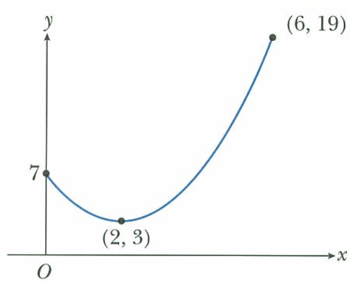
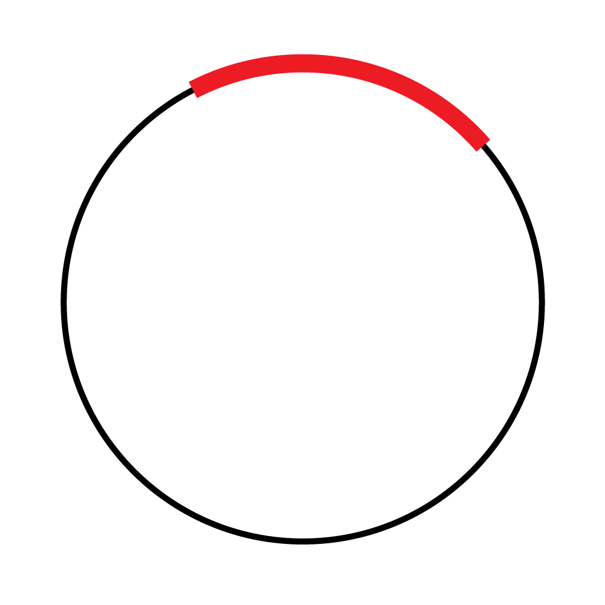

1. An acute angle is an angle _____ 90 degrees.
2. A straight line drawn from one point on the edge of a circle to another is called _____.
3. Find the gradient of the line segment AB, where A (5, -7) and B (2, -4).
4. Find the next term of the following sequence: 22, 17, 12, 7, 2, _____
5. The set of input values for a function is called the _____ of the function.
6. What is range of the following graph?
7. For composite functions, fg(x) = gf(x). (True or False)
8. For all positive integer n, √n is always an irrational number. (True or False)
9. Polynomials of the form ax³ + bx² + cx + d (where a ≠ 0) are called _____ functions.
10. Which one is a geometric progression?
11. The sequence 5,8,11,14,17,... is called an arithmetic progression. Each term differs from the term before by a constant. This constant is called _____
12. The product of the gradients of two perpendicular lines is always _____.
13. Parallel lines have equal _____.
14. The part highlighted in red is called the _____ of the circle.
15. The sine and cosine functions are called _____ functions because they repeat themselves over and over again.
16. The periods of y = sin(2x) and y = tan(x) are the same. (True or False)
17. dy/dx is called the _____ of y with respect to x.
18. The derivative of a curve f(x) tells you the _____ of the curve.
19. The denominator of the fraction π/9 is _____.
20. d²y/dx² is called _____ of y with respect to x.
21. Maximum and minimum points are both turning points, or _____ points.
22. Find the gradient of the curve y = x² + 1 at the point (2,1).
23. Stationary points/turning points of a function f(x) occur when dy/dx = _____.
24. The domain of the function f⁻¹(x) is the _____ of the function f(x).
25. To solve 2x+5=15, first we _____ 5 from both sides to get 2x=10. Then we _____ both sides by 2 to find x=5.
26. _____ of line segment AB is a line that is perpendicular to AB and goes across the midpoint of AB.
27. The function y = x²(x - 1) has _____ points of intersection with the x-axis.
28. The function y = -x² - 4 has no points of intersection with the x-axis. (True or False)